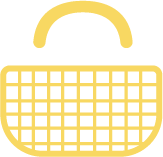

Beeb'ron

Au niveau de la mise en page, nous avons utilisé plusieurs balises structurantes afin d’organiser notre code et notre rendu final (section/nav/div …).
Dans la partie « head » du code, vous retrouverez aussi bien le titre de notre site (Beeb’ron) comme le lien vers la feuille de CSS ou certaines icônes présentes plus bas ou encore la balise permettant d’accéder aux différents caractères existants aujourd’hui. Nous avons également décidé de rajouter une favicon pour personnaliser notre site.
Dans la partie « body » se trouve la majorité du code. Le logo du site, le menu déroulant, la barre de recherche, le lien vers le panier, la barre de promotion, le message du jour, les parties « Meilleures ventes »/ « Nos produits » etc … tout se trouve dans le body.
Enfin, dans la partie « footer », nous retrouvons des liens menant à la page « qui sommes-nous » ou à cette page même ainsi que le classique « conditions générales de ventes » par exemple.
Sur la page d’accueil, nous avons décidé de mettre une barre de recherche permettant d’accéder à une page de vente de nounours qui elle-même, possède des liens cliquables sur tous les nounours. Tous les liens sont identiques et renvoient vers une page descriptive du produit.
Une barre de navigation est également présente sur la page d’accueil. Cette dernière reste fixée en haut du site jusqu'à un certain un défilement de la page web. Elle possède un menu déroulant contenu au sein de balises nav.
Le défilement du site sera fera de façon « smooth » grâce à la commande « scroll-behavior » présente dans le fichier CSS.
La barre « promotion du jour » se trouvant au sein de balises section possède dans son code CSS un background allant chercher une image se répétant plusieurs fois afin de donner cette suite de motifs.
Le message du jour défile grâce à la balise "marquee" et le choix de la couleur d’arrière-plan se fait directement dans le code HTML grâce à l’attribut « bgcolor ».
Les 3 icônes vertes (Nos magasins à votre service/Retrait en magasin sans contact/Livraison à domicile sans contact) proviennent du lien cité dans la partie head. Elles sont appelées via la commande et sont ensuite disposées en flexbox grâce au fichier CSS. Nous n'avons remarqué que bien plus tard que cela correspondant à du javascript malheureusement.
Vous trouverez en haut du site un logo de ruche permettant de retourner à l’accueil ainsi qu’un panier jaune vous menant directement à une « page panier » réalisée en partie en java pour plus de réalisme et ne pas se contenter seulement d’une redirection vers une fausse page panier.
Les images présentes sur la page d’accueil ont une mise en page un peu spéciale grâce à la commande « display : grid ; » dans le fichier CSS. Ce module permet de créer une mise en page en définissant des relations de taille, de position et d’empilement.
Après avoir cliqué sur « vêtements », « accessoires » etc via le menu déroulant, vous serez dirigé vers d’autres pages reprenant en grande partie le modèle de la page d’accueil mais avec l’arrière plan modifiée ainsi que la barre de navigation. Toutes ces pages ont un code.html et un code.css qui leurs sont propres.
Au niveau de la police, nous avons dans un premier temps utilisé @font-face avec les polices présentes dans le dossier css. Cependant, pour une raison que nous n'expliquons pas, elles n'étaient pas détectés. Dans un deuxième temps, nous avons utilisé la méthode @import,cependant seulement une partie de nos textes utilisés cette police. C'est pourquoi en deuxième choix, nous avons mis Century Gothic, qui ressemble fortement à notre première police et permet un rendu homogène.